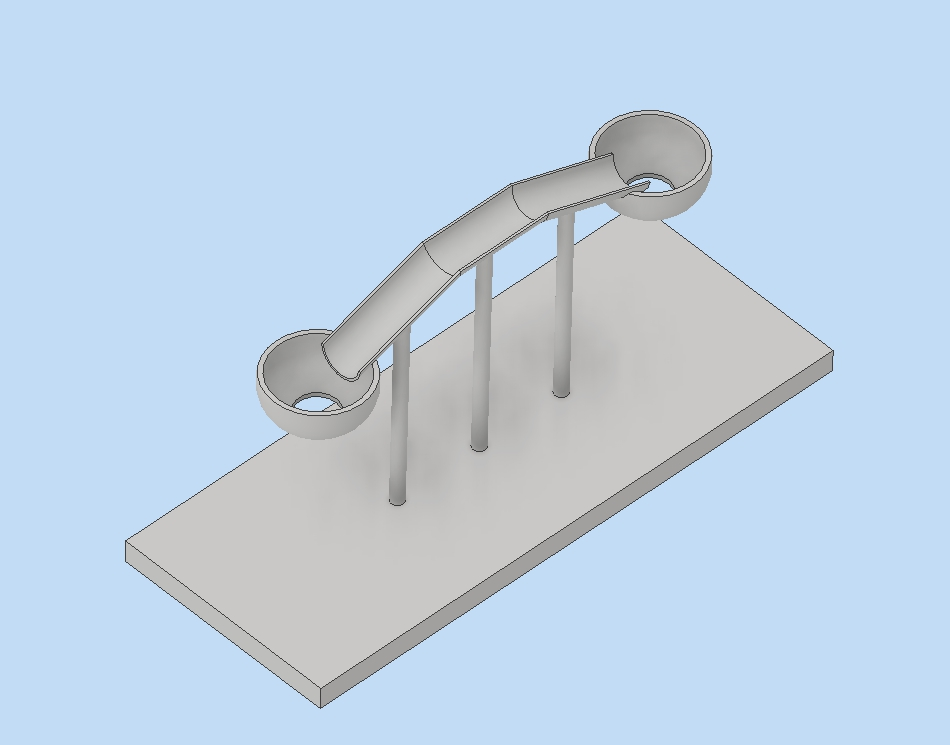
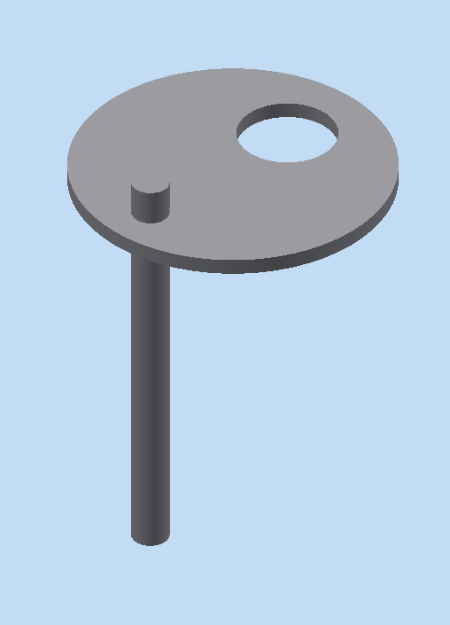
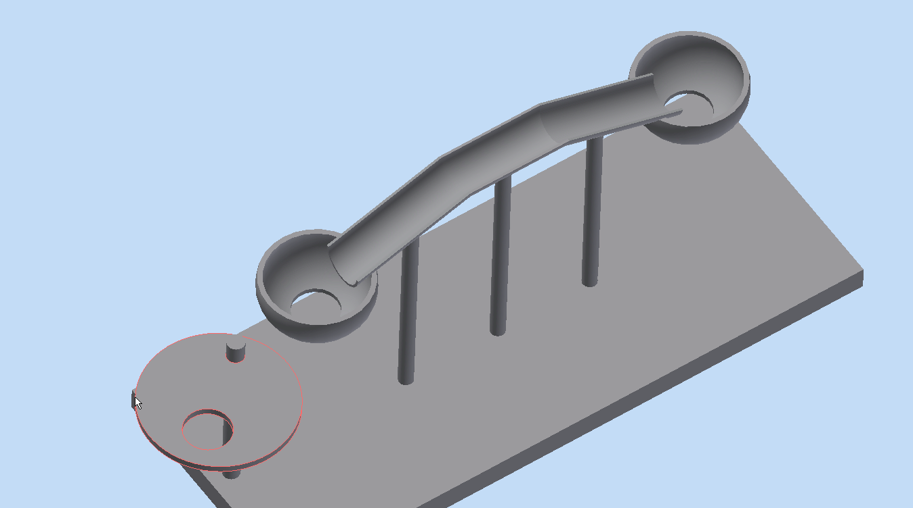
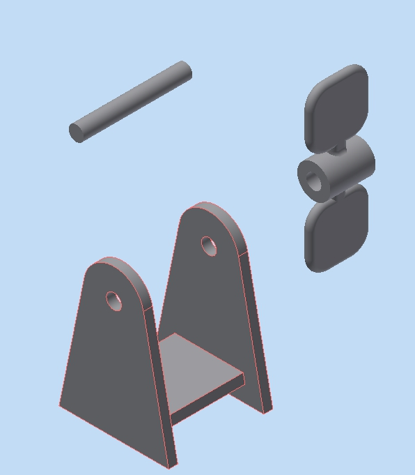
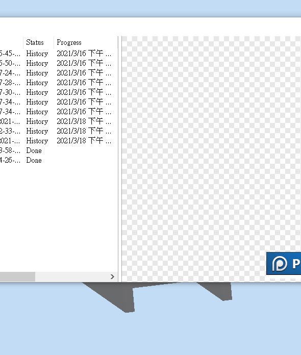
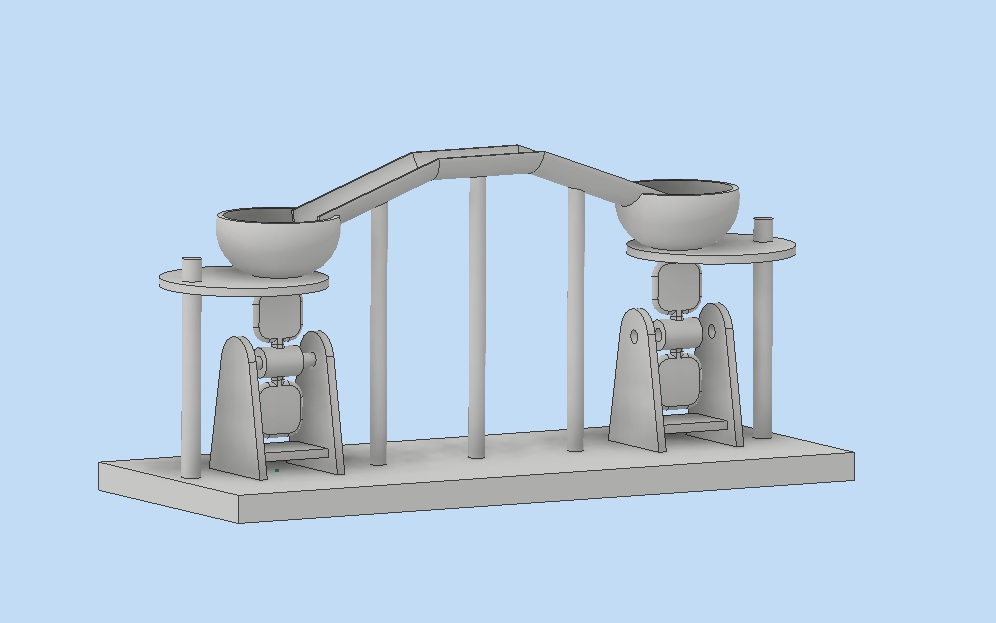
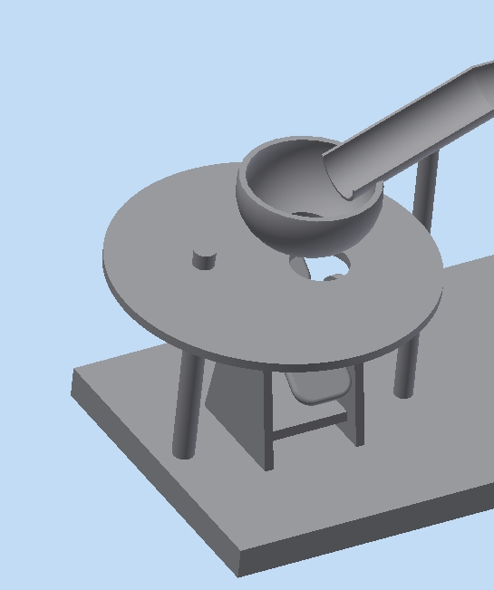
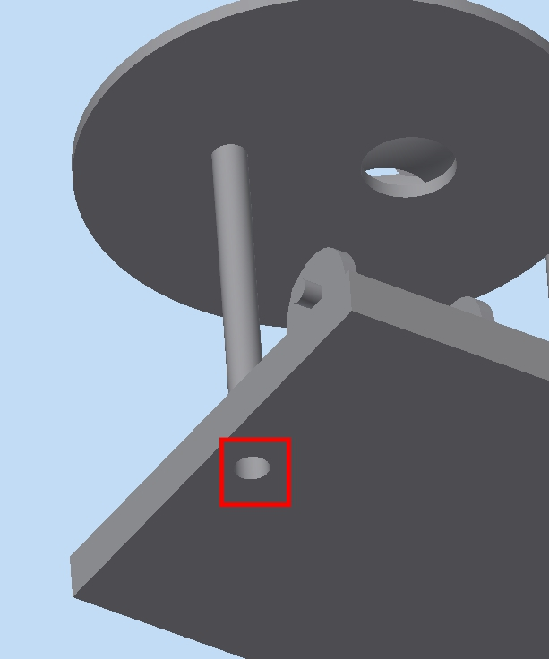

專題題目:排球扣球練習器
repo site 組員: 40823102劉怡萱 40823106廖苡雯 40823121粘晁偉 40823135林澤叡我們這次的專案，決定以上一次未完成的排球扣球練習器進行改良；原本的主體只有單一的骨架與球軌，我們將改良成雙向作動與作動時間長的機構，讓排球可以順利滑動；並改良夾持的機構，改良成讓球在圓盤滾動一段時間後，球體的中心滑動到圓盤的中心點後自動掉落。
W5 討論專題方向、每週進度
W6 繪製零件圖、在coppeliasim進行模擬並修正錯誤
W7 在coppeliasim進行模擬並修正錯誤、Heroku協同
W8 修正零件圖並進行coppeliasim模擬並修正、製作上台報告內容
W9 上台報告
預定進度:繪製零件圖
骨架、球軌、接住球的部分

轉盤及支撐軸，透過轉盤週期作旋轉動作讓球也成週期落下

轉盤週期作旋轉動作

發球器的軸、底座、擊球的轉臂

發球器做動

整體組合圖

嘗試使用coppeliasim模擬發球器進行做動
預定進度:在coppeliasim進行模擬並修正錯誤、進行Heroku協統
模擬後發現圓盤尺寸有誤且在模擬上很難達到圓盤週期與發球器時間一致，除把圓盤直徑加大外也討論如何修正圖。
進行Heroku協同
Heroku
預定進度:修正零件圖、在coppeliasim進行模擬並修正錯誤
coppeliasim進行模擬後發現轉盤太小會造成球一樣滾動因此將圓盤直徑加大

模擬後發現須將底座挖圓盤軸的洞，不然組合圖放入coppeliasim時會自動視為一體，會導致無法驅動

在coppeliasim進行模擬
在coppeliasim進行模擬
目前模擬做動還無法讓兩邊的圓盤都呈周期做動，只能兩個發球器旋轉跟一個圓盤轉動，發現軸沒有設定好導致圓盤碰到球軌就會停下無法繼續轉動
在這次的分組專題中，我們從構想主題到討論如何做動及用軟體模擬做動完整花了不少心力，為了讓產品做動前後修改很多次圖檔讓各零件間有公差或是完全接合，這讓我們認知到團隊分工合作及溝通的重要性，以及一項產品的開發是一件多麼困難的事情